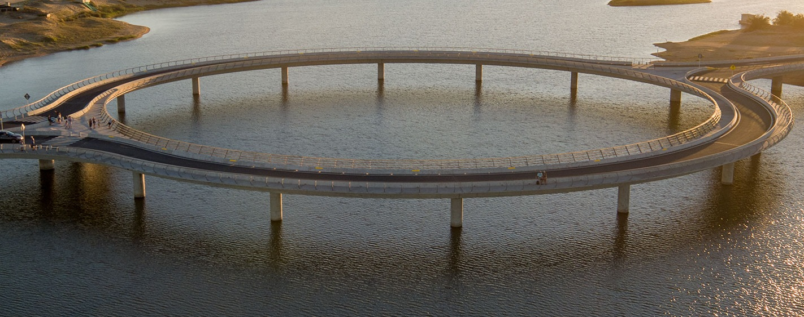

Puente Garzon
Haga click en la imagen
Haga click en la imagen


La laguna Garzón forma parte de un conjunto de masas de agua ecológicamente vulnerables dispersas a lo largo de la costa uruguaya. El Ministerio de Transporte había mostrado interés hacía tiempo en construir un puente sobre la laguna en el punto en el que se une con la costa e interrumpe la Ruta Nacional 10. Antes, la laguna solo se podía cruzar en balsa motorizada. El diseño del puente de forma circular de 202 metros se sitúa sobre el frágil ecosistema, aunque sin perturbarlo, reduce la velocidad del tráfico por su forma y crea un punto de interés apto para los peatones. Inaugurado en diciembre de 2015, el puente posee 16 pilares de hormigón redondos, colocados cada 20 metros, que soportan dos rampas y una rotonda central que cruza la laguna. Las pasarelas peatonales, que quedan a cada lado de los carriles divididos, permiten acceder al espacio central del puente y a su perímetro, donde los visitantes pueden sentarse, pescar y apreciar el panorama.
El puente fue cuidadosamente diseñado para proteger el ecosistema existente, con una altura que permite la libre circulación de barcos y con el menor número de pilares posible. Diseñada como una “laguna dentro de la laguna”, la forma circular reduce la cantidad de sombra sobre el agua. El emplazamiento del puente de la laguna Garzón, documentado como Área de Importancia para la Conservación de las Aves y la Biodiversidad, un ecosistema natural que protege a las aves de la región y su hábitat, es un punto muy frecuentado para la observación de aves y la recolección de almejas, y se encuentra rodeado de vistas panorámicas del paisaje.

Haga click en la imagen

En marzo de 2021 comenzaron los trabajos de construcción del Edificio Galicia ubicado en calle Galicia entre Magallanes y Minas (Montevideo, para el MVOT Se trata de un edificio con 46 unidades habitacionales desarrolladas en planta baja más 5 niveles y en el Subsuelo se ubican 23 cocheras, proyectado por el Estudio CZG. Los apartamentos se implantan en dos bloques tipo “C” en torno a un patio cada una. Entre ellas se configura un patio central ajardinado al que se proyectan las viviendas y el espacio exterior del salón de usos múltiples. Las viviendas del programa se conforman de la siguiente forma: 5 unidades de un dormitorio, 29 de dos dormitorios, mientras que 12 son de tres dormitorios ,sumando un salón de usos múltiples.

Haga click en la imagen


El proyecto comenzo con la construccion de un deposito de 5300 m2 y oficinas situados en un predio de 9000 m2. Fue necesario el movimientos de suelo, construcciones en hormigón armado, suministro y montaje de estructura metálica de alma llena para nave y construcción de oficinas con estructura metálica y Steel Deck. La construcción de pavimentos de hormigón y obras complementarias en los alrededores fue ejecutada en la segunda etapa de la obra a fines del 2016.

Haga click en la imagen

La obra del complejo Villaggio Riviera es un emprendimiento de Artigas-Group. La componen 8 edificaciones distribuidas en una superficie de 8543 m2 que además, cuenta con un área enjardinada de 800 m2. Se encuentra ubicada en la esquina de las calles Avda. Agraciada y Enrique Turini, a quinientos metros del parque urbano del Prado. El proyecto posee 69 unidades de vivienda: 23 unidades de un dormitorio, 40 de dos dormitorios y 6 de tres dormitorios. La unidades de 2 y 3 dormitorio tienen parrillero individual dentro de la terraza principal y las de 1 dormitorio en el sector noreste.